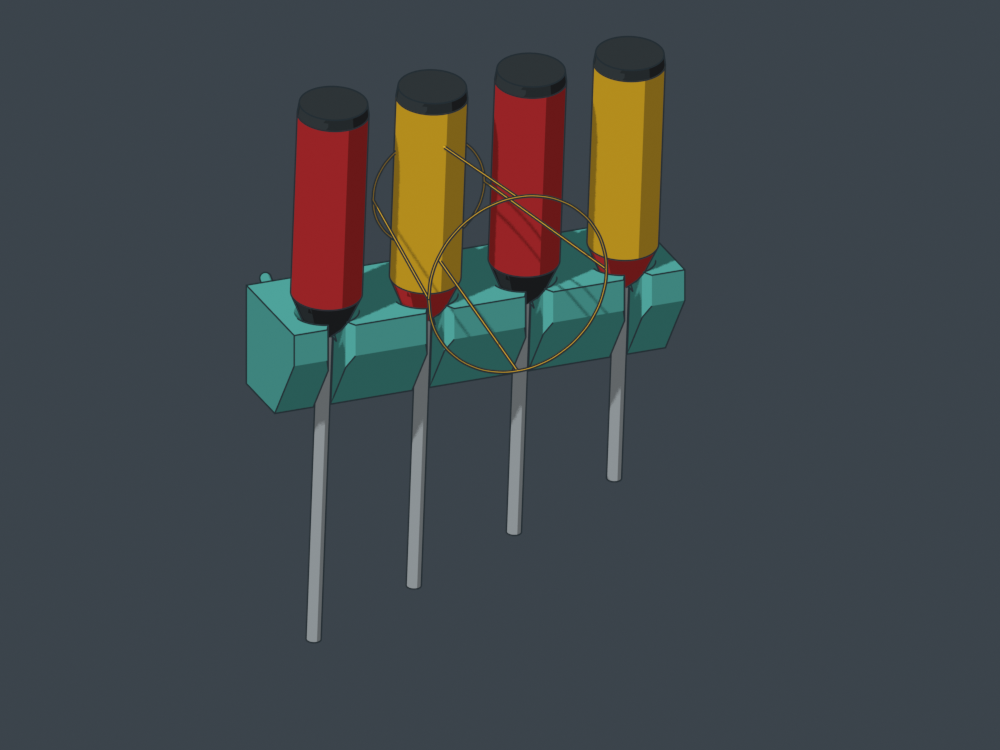
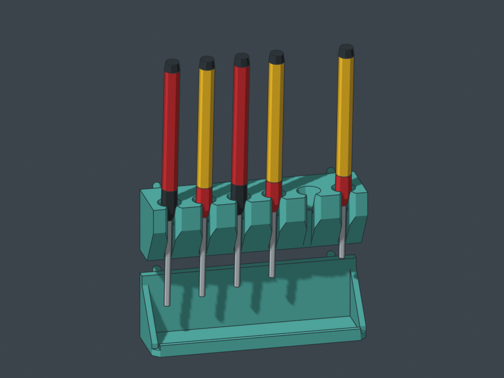

WIP A v2: the wider print foundation is implemented. The working seats still have the observed centering/rocking limitation. This is a comparison candidate, not the resolved design.
Four screwdriver racks, from slim jeweler drivers to large handles. Shared solder-station geometry: wide plates, deep chamfered entries, continuous flush backs, canonical tight pegs and separate low tip floors. One empty slot per rack is shown so the return opening stays visible.
Review models, not exact-fit manufacturer replicas. Wiha publishes useful shaft/handle dimensions; Craftsman handle and bolster sizes are still provisional. A single model does not cover every screwdriver sold under either name. Inspect the stated envelopes. These revised A parts have not been sliced or physically tested. Broader contact is a geometric improvement, not a calibrated adhesion or overturning safety factor.
The motion
Lift about 14 mm along the slight outward lean, then pull toward you. Return reverses that path in one sweeping movement: the shaft enters through the open front; the shoulders settle into the shallow funnel. No long sleeve, full-shaft threading or wrist rotation is required. The seated and 2 mm high poses block a straight forward slide without relying on friction.
All 19 positions were checked against the other stored tools and the board. A widened approach cone and a full cylindrical grasp envelope also clear the modeled neighbors. These are bounded geometry checks; comfortable blind return and accidental-bump retention still need a hands-on trial.

Gold wire: the checked approach volume for one SD03 grip. This is a planning envelope, not a measured hand.
Upright from the start
Print each rack and floor separately, base down. A v2 has permanent 18 / 24 / 32 / 40 mm deep bases, respectively, replacing the 9.4 mm strips. Keeping the 55° rising underside shortens the body without changing the working seats, widths or peg fit. Actual bed contact increases 1.9–4.2 times; no removable brim is counted. The lower throat relief is steep enough to remain above 50° after the 5° tool lean. The main bodies have no downward-facing non-bed surface below the 49.5° audit threshold. The settled rear peg geometry still needs small, accessible build-plate supports; it was not reshaped to claim support-free printing.
The largest piece is 226.6 mm wide. No curve rises from the bed, no giant front curtain hides the tips, and the separate floors can move by whole grid rows for long shafts. No material reduction was used to compromise the bearing area or lead-in.
Choose by handle and blade envelope
SD01 · Jeweler drivers
6 tools / 5 grid cells · 125.0 mm wide

Handle envelope ≤ 9 mm · blade envelope ≤ 3.4 mm · maximum shown shaft 60 mm. Seat spacing 20.32 mm · grasp clearance in the modeled array ≥ 4.3 mm.
Handle envelope ≤ 30 mm · blade envelope ≤ 6.35 mm · maximum shown shaft 152.4 mm. Seat spacing 44.45 mm · grasp clearance in the modeled array ≥ 4.5 mm.
Handle envelope ≤ 40 mm · blade envelope ≤ 9.525 mm · maximum shown shaft 203.2 mm. Seat spacing 57.15 mm · grasp clearance in the modeled array ≥ 6.1 mm.
The four racks occupy 27 grid cells, 685.8 mm (27 inches) across, with 2 mm seams. Put the frequently used grips in your comfortable elbow-to-shoulder reach band; place the occasional long driver farther out. Mount the low floors below the actual tips, leaving clearance. Your 48 × 68 inch board does not make its upper rows a comfortable daily reach.
Whole-inch module width and tool count are independent: SD01 fits six tools in five cells. Every rack and floor has two widely separated peg columns. Empty funnels and exposed shafts identify the missing tool.
Actual CAD renders use the shared bench-ink style. Tool shapes are dimensional envelopes. Open this HTML directly for images and downloads; local 3D is most reliable through the included loopback server. Access/overhang audit · Dimensions and motion checks.